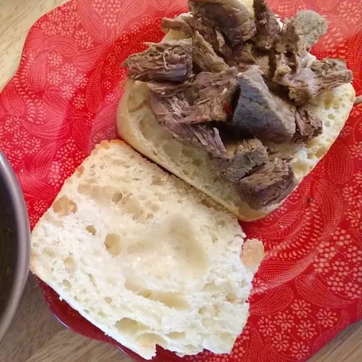

Sandwich Recipe
Chicago-Inspired Italian Beef Sandwich
I tried to combine the traditional Italian beef sandwich with the French dip sandwich with a little nod to the pulled pork sandwich. Instead of using thinly sliced roast beef, I used stew beef, with apologies to my friends from Chicago.
Ingredients
- 1½ pounds boneless beef chuck, cut into 2-inch pieces
- salt and ground black pepper to taste
- 1 tablespoon vegetable oil
- 6 cloves garlic, sliced
Directions
- Step 1
Put the chicken, carrots, celery and onion in a large soup pot and cover with cold water. Heat and simmer, uncovered, until the chicken meat falls off of the bones (skim off foam every so often).
- Step 2
Take everything out of the pot. Strain the broth. Pick the meat off of the bones and chop the carrots, celery and onion. Season the broth with salt, pepper and chicken bouillon to taste, if desired. Return the chicken, carrots, celery and onion to the pot, stir together, and serve.